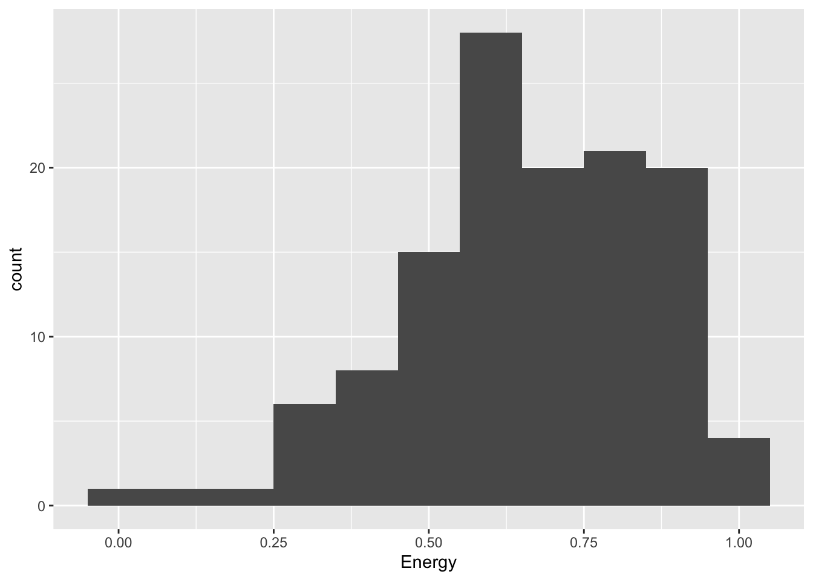
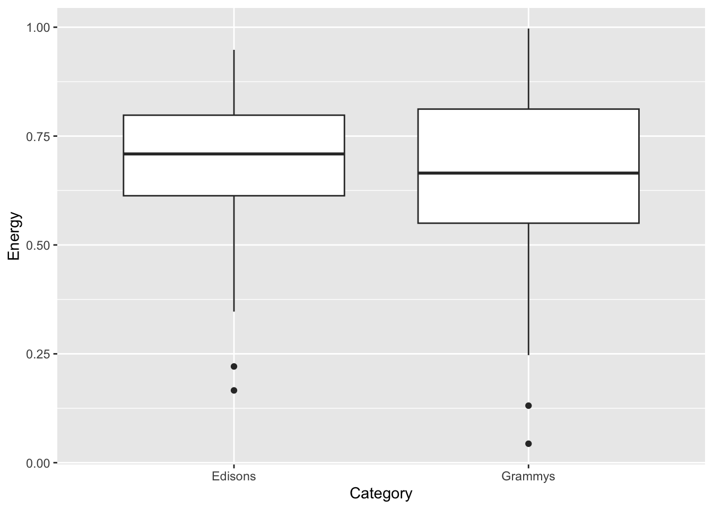
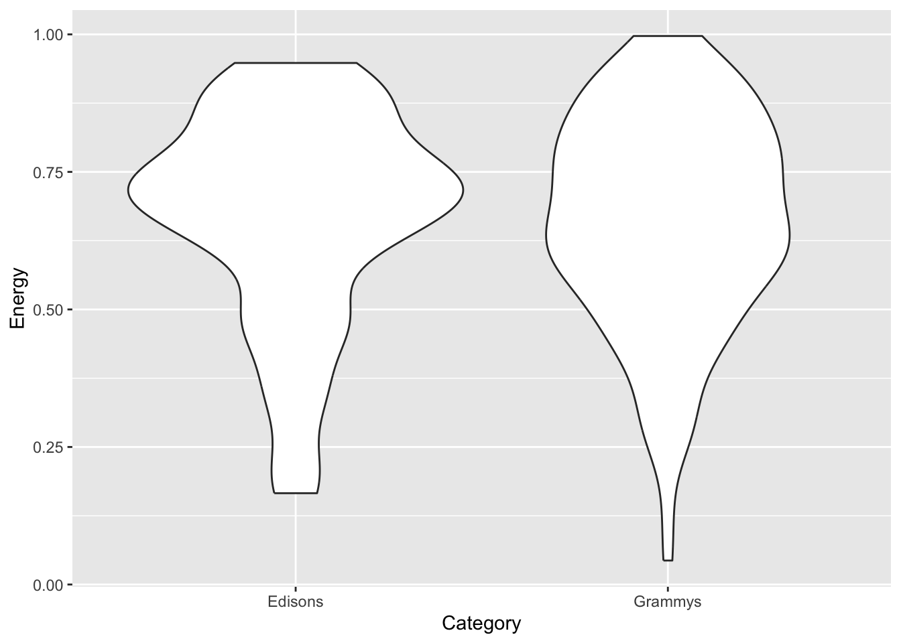
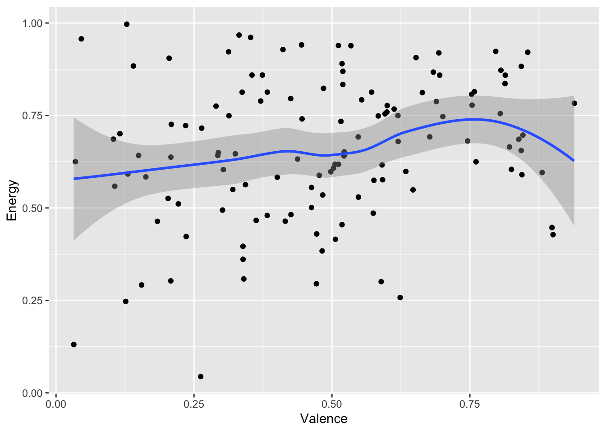
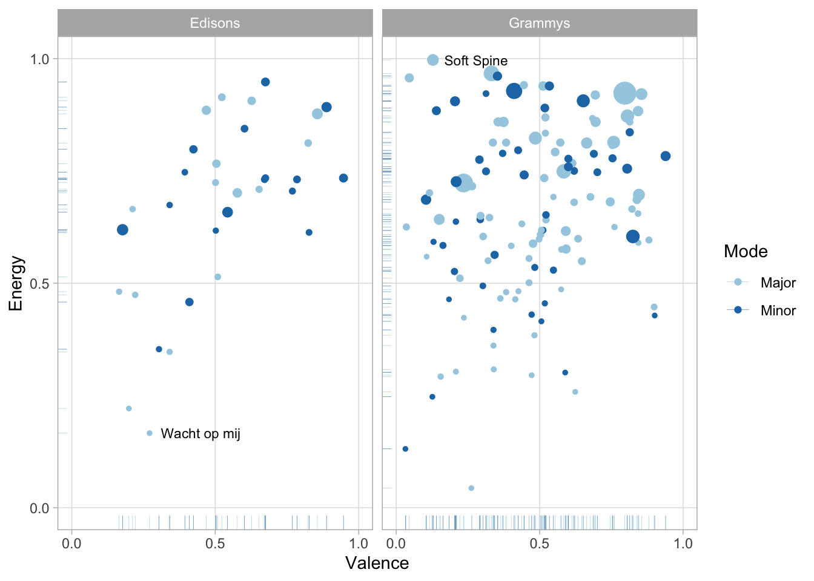

Visit the Spotify feature documentation. It is quite short – and Spotify provides no other explanation of what their features mean.
For each feature, discuss with your group which of the four ‘musical moments’ you think Spotify uses to compute it:
Pitch
Volume
Timbre
Duration/Time
Some of them are obvious, and some of them are very much not!
Be prepared to discuss your conclusions with the class at the end of the breakout.
Breakout 2: ‘Let It Go’
If you interacted with any young children in your life a few years ago, you also surely interacted with the Disney hit ‘Let It Go’, from Frozen. More recently, ‘We Don’t Talk about Bruno’ from Encanto was fighting to take its place. What about these songs made them so irresistibly popular? You and your group will try to use the Spotify API to see if there is anything unusual.
Introduction
The first step to working with data is to choose a playlist on Spotify and add it to your personal playlist collection. Let’s check into Soundway Records’s ‘Soundway Records Selects’. Open the link and add it to your Spotify library.
Once the playlist is saved, visit the Exportify tool and export the playlist as a CSV file. Now you are ready to look at the features!
Every analysis you do for this class must start with the following command, which loads the tidyverse packages. You need to run it once per session.
library(tidyverse)
── Attaching core tidyverse packages ──────────────────────── tidyverse 2.0.0 ──
✔ dplyr 1.2.0 ✔ readr 2.1.6
✔ forcats 1.0.1 ✔ stringr 1.6.0
✔ ggplot2 4.0.2 ✔ tibble 3.3.1
✔ lubridate 1.9.5 ✔ tidyr 1.3.2
✔ purrr 1.2.1
── Conflicts ────────────────────────────────────────── tidyverse_conflicts() ──
✖ dplyr::filter() masks stats::filter()
✖ dplyr::lag() masks stats::lag()
ℹ Use the conflicted package (<http://conflicted.r-lib.org/>) to force all conflicts to become errors
Next, use the Import Dataset button in the top-right pane of RStudio to load the CSV file you downloaded from Exportify. The From Text (readr) option usually works best. Give some though to the name you use for loading, because that is the variable name you will need for the rest of the analysis. In this example, we will use soundway.
After you load these features, the easiest way to look at them is to click on the variable in the Environment tab in the top-right pane of RStudio. That will open a full, sortable, spreadsheet-style summary of your data. You can also compute summary statistics with the summary() function.
Open the Disney Hits playlist on Spotify and load it into R, as in the demo example. Look at the data, starting in spreadsheet form, and compare ‘Let It Go’ and ‘We Don’t Talk about Bruno’ to the other tracks on the playlist. Is there anything unusual about them? Be prepared to discuss your findings with the group.
If you have time, try identifying outliers on the playlist – tracks that have extreme and unusual values on one of the Spotify features – and listen to them. Do you agree with Spotify’s assessment?
Can you also agree on which track on the playlist is the most typical Disney hit? If so, how did you make your decision? If not, why does your group disagree?
Breakout 3: Digster Decade Comparisions
In this breakout session, you and your group will try to make the best visualisation you can to show the differences between the top pop hits of recent decades.
Introduction
Let’s start by loading playlists from the recent Grammy and Edison awards. Save the Grammys as grammy and the Edisons as edison.
Next, let’s combine data sets with a labelling variable. This is the strategy I recommend for your portfolios: make a separate Spotify playlist for each category in your corpus, and then combine them with a category label like the example below.
awards <-bind_rows( grammy |>mutate(Category ="Grammys"), edison |>mutate(Category ="Edisons") )
The simplest data visualisation of a single, continuous variable is a histogram.
grammy |>ggplot(aes(x = Energy)) +geom_histogram(binwidth =0.1)

If you want to compare a continuous variable across categories, you can use faceting (also known as small multiples), a boxplot or a violin plot.
awards |>ggplot(aes(x = Category, y = Energy)) +geom_boxplot()

awards |>ggplot(aes(x = Category, y = Energy)) +geom_violin()

To compare two continuous variables, you can create a scatter plot. If you have a large corpus and the points end up on top of each other, geom_jitter() adds some random noise without disturbing the overall pattern.
grammy |>ggplot(aes(x = Valence, y = Energy)) +geom_point() +geom_smooth()
`geom_smooth()` using method = 'loess' and formula = 'y ~ x'
grammy |>ggplot(aes(x = Valence, y = Energy)) +geom_jitter() +geom_smooth()
`geom_smooth()` using method = 'loess' and formula = 'y ~ x'

Good visualisations, of course, have many more components. Remember Tufte’s six design principles (2006):
Show comparisons, contrasts, differences.
Show causality, mechanism, explanation, systematic structure.
Show multivariate data; that is, show more than 1 or 2 variables.
Thoroughly describe the evidence. Provide a detailed title, indicate the authors and sponsors, document the data sources, show complete measurement scales, point out relevant issues.
Analytical presentations ultimately stand or fall on the quality, relevance, and integrity of their content.
awards |># Start with awards.mutate(Mode =ifelse(Mode ==0, "Minor", "Major") ) |>ggplot( # Set up the plot.aes(x = Valence,y = Energy,size = Loudness,colour = Mode ) ) +geom_point() +# Scatter plot.geom_rug(linewidth =0.1) +# Add 'fringes' to show data distribution.geom_text( # Add text labels from above.aes(x = Valence,y = Energy,label = Label ),data =tibble(Label =c("Wacht op mij", "Soft Spine"),Category =c("Edisons", "Grammys"),Valence =c(0.271, 0.128),Energy =c(0.166, 0.997) ),colour ="black", # Override colour (not mode here).size =3, # Override size (not loudness here).hjust ="left", # Align left side of label with the point.vjust ="center", # Align vertical centre of label with the point.nudge_x =0.04# Nudge the label slightly right. ) +facet_wrap(~ Category) +# Separate charts per playlist.scale_x_continuous( # Fine-tune the x axis.limits =c(0, 1),breaks =c(0, 0.50, 1), # Use grid-lines for quadrants only.minor_breaks =NULL# Remove 'minor' grid-lines. ) +scale_y_continuous( # Fine-tune the y axis in the same way.limits =c(0, 1),breaks =c(0, 0.50, 1),minor_breaks =NULL ) +scale_colour_brewer( # Use the Color Brewer to choose a palette.type ="qual", # Qualitative set.palette ="Paired"# Name of the palette is 'Paired'. ) +scale_size_continuous( # Fine-tune the sizes of each point.trans ="exp", # Use an exp transformation to emphasise loud.guide ="none"# Remove the legend for size. ) +theme_light() +# Use a simpler theme.labs( # Make the titles nice.x ="Valence",y ="Energy",colour ="Mode" )

Instructions
Search in Spotify for QmusicNL’s four decade-based playlists:
Q-top 500 van de 80s,
Q-top 500 van de 90s,
Q-top 500 van de 00s, and
Q-top 500 van de 10s.
Choose any two decades you want to compare, and make the best visualisation you can that shows the differences between the two decades. Also choose a member of your group who will be prepared to share their screen at the end of the breakout and show off your results. But above all, help each other so that every member of your group leaves with some working code.
Start simple, and gradually add details like the ones in the fancy final example.